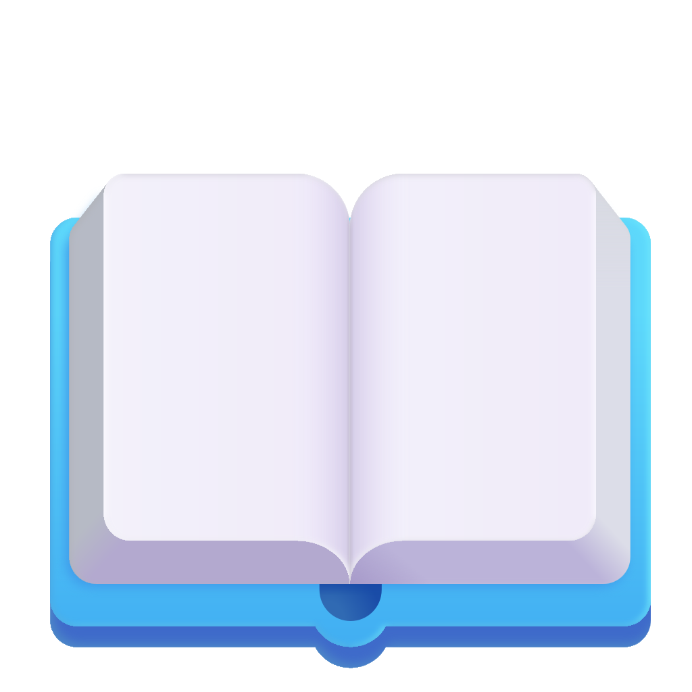
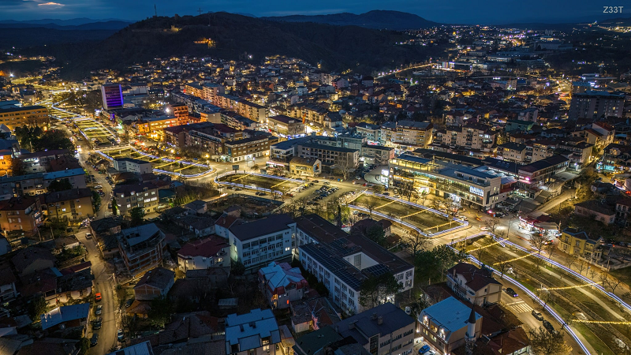

Education
2012-2021
Основно училиште „Ванчо Прке“ Штип (завршено со одличен успех)2021-2025
Средно училиште Гимназија „Славчо Стојменски“ Штип Насока: Природно математичко подрачјеBiography
Датум на раѓање 22/06/2006
Националност Македонска
Роден сум во Штип, РС Македонија. 
Skills
- Комуникациски вештини
одлични комуникациски вештини стекнати од посетувани предавања со наслови communication and speaking skills.
Македонски јазик - мајчин јазик
Англиски јазик: C1
Германски јазик: B2
- Компјутерски вештини
Одлично познавање на алатките од MS Office пакетотпакетот
Одлично владее со програмскиот јазик C++
Владеење со HTML, CSS, JS
- Креативност
- Одговорност
- Добар организатор